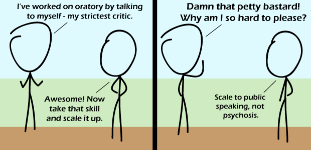

Comic JK 568
When I Feel Like It
⇤
<
?
>
⇥

⇤
<
?
>
⇥
Forum
.
RSS
.
Digg
.
Facebook
.
Reddit
.
Twitter
.
Stumbleupon
Enter your thoughts on number 568 here. Please, no spamming, trolling, phreaking, or losing arguments with yourself. Your mother works on oratory with my dick in her mouth. I now want to see a meaningful graph with those axes. >I concur >> Maybe public speaking ability rises linearly with psychosis? eg, Hitler. >>> Godwin! >>> For a while, but it eventually plummets. > Yes, graphs with Golden Axes! Another interesting pair of axes is Tourette's and YouTube comments. >Synonyms don't make good axes. >>Yeah, you ever try to cleave someone with a synonym? >>>As part of a cutting remark, sure. >>>>And wouldn't an axe have worked so much better? >>>>>Or at least something synonymous? Battle and Pole are also an interesting pair of axes. > Which who what now? >>Battle-axes and pole-axes >>>Today you win sir, but I'm sorry to say that.... THE GAME Hey guys, I know you like to be elitists and insist on using stuff like curly quotes and ellipses instead of several periods, but the encoding on this page isn't specified. Different browsers detect it to be ISO-8859-1, some to be UTF-8, some a crazy "extended ASCII". If you use a non-ASCII character here, quite a few people won't see it here. Worse, when they make their comment, the character mutates, then NO-ONE can see it. Seriously, just stick to ASCII for this box. >I have yet to have this problem with anyones posts o.o use chrome or firefox. >> Yes, this page should be Firefoxed or Chromed, as should the rest of the 'net. (Must verb favorite programs to battle stupid verbing of apps that use existing words as names.) >>> (Word!) >>> I'd prefer Operad. The idea of having to rely on add-ons for basic >>> functionality is idiotic. >> The real issue isn't idiotic browsers, it's that ComicJK doesn't specify an encoding. If he'd specify UTF-8, we'd be good. Until he does that, stick with ASCII. > I fixed the ellipsis in my comment in the previous comic box. Interestingly, I hadn't originally used it -- somebody deleted my three periods and replaced them with an ellipsis char. ... and then the commenting system failed to replace it with … ... >> Yeah, I know someone did, from the archives (lukehu.ath.cx/comicjk/viewer.php). I find it amusing that they replaced the ellipses, but didn't add an apostrophe to your "Im" (I did that).